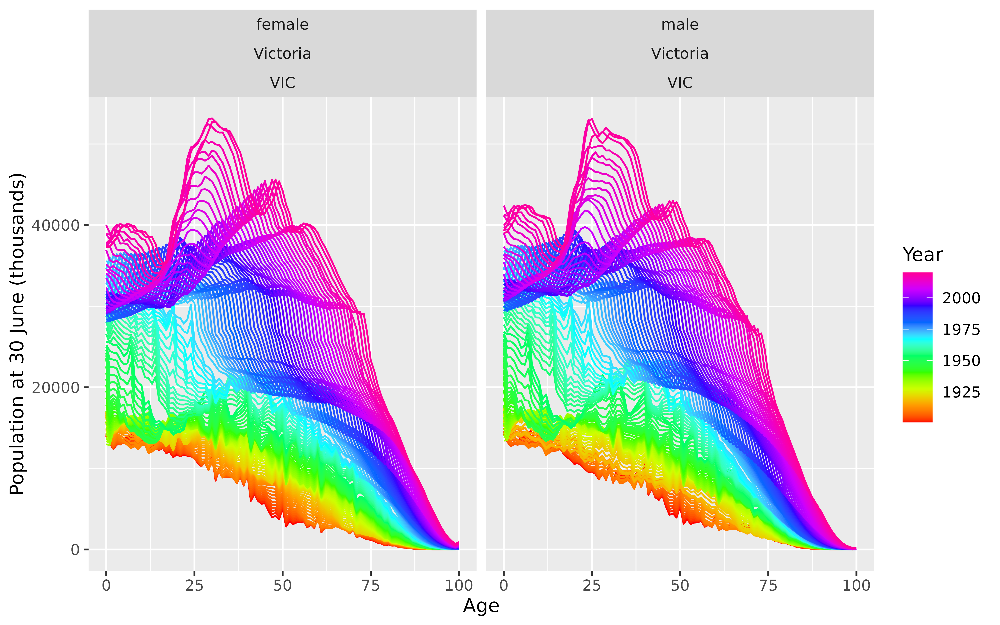

aus_mortality.Rdaus_mortality is an annual `tsibble` with three values:
| Mortality: | Mortality rate |
| Exposure: | Population at 30 June each year |
| Deaths: | Number of deaths |
Time series of class `tsibble`
Australian Human Mortality Database
The data is disaggregated using four keys:
| Age: | Age at death |
| Sex: | male or female |
| State: | State of Australia |
| Code: | Short code for state |
The age group 100 also includes people who died aged older than 100.
library(ggplot2)
aus_mortality
#> # A tsibble: 280,881 x 8 [1Y]
#> # Key: Age, Sex, State, Code [2,727]
#> Year Age Sex State Code Mortality Exposure Deaths
#> <int> <int> <chr> <chr> <chr> <dbl> <dbl> <dbl>
#> 1 1901 0 female Australia AUS 0.103 46315 4780
#> 2 1901 1 female Australia AUS 0.0231 42345 978
#> 3 1901 2 female Australia AUS 0.00694 41766 290
#> 4 1901 3 female Australia AUS 0.00453 42635 193
#> 5 1901 4 female Australia AUS 0.00376 42774 161
#> 6 1901 5 female Australia AUS 0.00299 44160 132
#> 7 1901 6 female Australia AUS 0.00259 44747 116
#> 8 1901 7 female Australia AUS 0.00218 45515 99
#> 9 1901 8 female Australia AUS 0.00185 45437 84
#> 10 1901 9 female Australia AUS 0.00144 45911 66
#> # ℹ 280,871 more rows
aus_mortality |>
dplyr::filter(State=="Victoria", Sex != "total") |>
rainbow_plot(Exposure/1000) +
ylab("Population at 30 June (thousands)")
